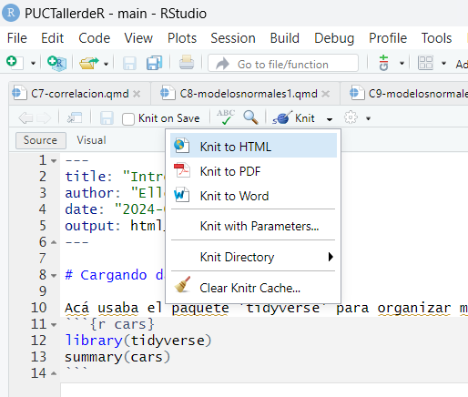

Había dos lugares para hacer códigos en R Studio: console y un script.
El Consolo
En el console podemos hacer códigos de solo una línea. Por ejemplo, podemos hacer matemáticas básicas en el console (abajo).
Puede hacer matemáticas básicas en el consolo.
Puede pedir ayuda en el console si usa un mandato y un signo de interrogación.
Acá activamos el función de ayuda.
Puede usar para determinar la cita para una paquete (es importante incluír sus paquetes y citas en cualquier tesís o paper).
Pedir citaciónes en el consolo.
Finalmente, usa el console para installar paquetes. Paquetes son funciones no installadas con R normal. Usualmente son disenadas por algo especifico (metricos ecologicos, graficos, etc..).
Para usarla, es necesario installar del internet a su computadora (necesita internet por solo este etapa) y despues puede usarla en cualquier momento. A installar, usa el código ’install.packages(“nombre de paquete”). Ten cuidado, el nombre de paquete debería ser exactamente correcto y con parentesís (no guion).
Aca instalo el paquete ‘tidyverse’ en el console
Script
Aún puede trabajar con el consolo, y hay cositas que solo puede hacer en el consolo, para las ciencias de datos es mejor usar un script.
En el consolo no es posible guardar su trabajo, si cierre R, lo pierde. Pero con un script puede guardar su trabajo, y puede trabajar sin hacerlo. En el consolo, todo debería ser correcto o no funcionará, pero con un script, puede hacer solo algunas líneas y trabajar en otras hasta todo esta perfecto.
Ademas, si guardaría su script en el mismo carpeta con su proyecto y csv, tiene acceso a los dos.
Apuntes en un script
Tomar apuntes con #
Es importante dejar apuntes en sus códigos para su mismo en el futuro y para cualquier otra persona que usará sus códigos
Puedes usar # para incluir códigos que ya no funciona, pero no quieres quitar totalmente
Apuntes con #
R Script y R Markdown
R Script
R Markdown
Cada palabra esta considerada código
Hay cajas para seperar códigos y texto
Gráficos se exporta en su ventana de ‘plot’
Incluír gráficos, sitios de web, y fotos en sus códigos
Sus mensajes y errores está en ‘consolo’
sus mensajes y errores está en el markdown
Solo exportar como script
Puede exportar como pdf, html o documento de word
Lo mas básico, pero fácil
mas complicado, pero mejor
Vamos a usar R Markdown en este clase porque si sus códigos no se funciona, tampoco se exporta su R Markdown. Entonces, si exporte su Markdown como PDF, significa que sus códigos funciona.
Empezando con R Markdown
Primero, instalar el paquete en el consolo: install.packages(“rmarkdown”)
Distinto a los otros paquetes, solo necesita instalar y no debería hacer nada mas despúes.
Para empezar un ‘R Markdown’ tocar el cruz verde, llamar la en manera descriptiva en su carpeta de proyecto.
Menú de opciones.
R Markdown página principal.
Existe cuatro componentes de un R Markdown allá: el ‘yaml’, cajas de códigos, un título, y texto de típo ‘markdown’.
YAML
El YAML (abajo), es el parte mas específico del R Markdown. Este parte se manda el título, estilo y formato del R Markdown. Había varías cosas que puede cambiar acá, pero por ahora, está bien quedarse como se genera automáticamente.
El YAML
Por si caso quiere cambiar su estilo, o algo del YAML, puede investigar opciones acá: R Markdown YAML (inglés)
Ten cuidado con espacios, porque en el YAML es crucial que los espacios son exactamente correcto.
Texto (markdown) vs códigos
En R Markdown, puede usar texto normal como un documento de word, y por eso es muy útil por reportar y organizar lo que hace.
R Markdown en R Studio y Markdown exportado
Acá puede ver que resulta de su R Markdown. Hay textos normales, que aparece así, pero los cajas (en gris) contiene códigos y se hace cuando exportar su Markdown. Si tenga códigos que no se funciona, no puede exportar su Markdown.
Para hacer una caja para códigos (se llama ‘code chunks’ en inglés), presione ‘ctrl + alt + i’.
Resultará una caja con {r} encima. Allá puede esconder sus códigos, con ‘include = TRUE/FALSE’ y echo = TRUE/FALSE adentro del {} (con echo=FALSE se hace sus códigos, pero solo aparece sus reesultados, con include=FALSE, se hace sus códigos, pero no aparece nada).
Ej:
library(tidyverse) # gráficos y organización de datos
── Attaching core tidyverse packages ──────────────────────── tidyverse 2.0.0 ──
✔ dplyr 1.1.4 ✔ readr 2.1.5
✔ forcats 1.0.0 ✔ stringr 1.5.1
✔ ggplot2 3.5.1 ✔ tibble 3.2.1
✔ lubridate 1.9.3 ✔ tidyr 1.3.1
✔ purrr 1.0.2
── Conflicts ────────────────────────────────────────── tidyverse_conflicts() ──
✖ dplyr::filter() masks stats::filter()
✖ dplyr::lag() masks stats::lag()
ℹ Use the conflicted package (<http://conflicted.r-lib.org/>) to force all conflicts to become errors
Primero que todo, es necesario cargar sus datos del su computadora y sus paquetes del internet. Con datos guardado en la misma carpeta de su proyecto, debería funcionar facilmente (si no, puede cambiar su carpeta activa con ‘setwd(“C/…”)’
# hacer apuntes con '#' es importante incluírlosdatos <-read.csv("ExExcel.csv") # como importar sus datos (en forma csv)head(datos) # ver solo las primeras 6 líneas del sus datos para asegurar que todo ha cargado corectamente
dim(datos) # ver los dimensiones de la tabla cargada: líneas y filas
[1] 32 10
Tambien, hay datos guardados en R que puede usar con ‘data()’ (en inglés) o hay algunos que son translados en español con ‘datos::’.
# usar datos en R ## en inglésdata(iris)## en españollibrary(datos)flores <- datos::flores
Paquetes son programados para hacer funciones especificos que no son incluidos con R básico. Por ejemplo, para calcular indices de competición ecológicos, puede usar ‘bipartite’. Para abrir un paquete que ya lo instaló, usar ‘library()’. No pone el nombre en comillas.
library(tidyverse)library(MASS)
Attaching package: 'MASS'
The following object is masked from 'package:dplyr':
select
Es necesario recargar los paquetes cada vez que reempezar con un script. Ademas, es necesario incluir library() con los paquetes deseados en cada script nuevo.
Exportación de su R Markdown
Para exportar, usa ‘knit’. Para hacerse, debería tener todo en orden (si sus códigos no se funcionan, tampoco funciona el ‘knit’). Usualmente, si no cambie, se exporta como ‘html’ (útil para sitios de web), pero puede cambiar en un documento de word o pdf.

Opciones para ‘knit’, o sea, exportar su R Markdown
Ejercicios
Objetivo: Practicar y sentir comodo usando R Markdown.
Tareas:
Crear un R Markdown y guardar con un nombre adecuado
Escribe un párrafo con título y subtítulo
incluir algún tipo de matemáticas en su párrafo
Haz una tabla
Haz una caja de códigos y cargar datos (en inglés o español como querai)
Instala un paquete a los menos (se sugiero ‘tidyverse’) y cargarla en su script